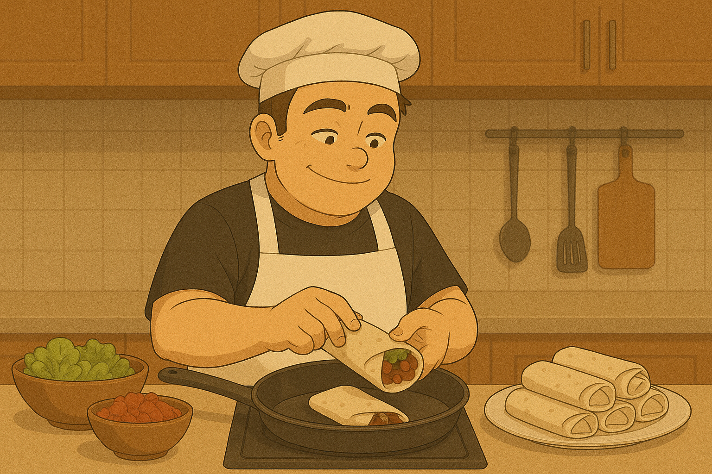

Warrito
Descripcion:
"Warrito" es el burrito clasico de Warangaron, cena clasica para los dias que no sabe que comer. Una receta muy facil y deliciosa
Ingredientes:
- Rapiditas (grandes o medianas, dependiendo que longitud desees)
- 1 cebolla
- Manteca (25grs)
- Aceite
- Pollo o carne (1 pechuga o 1 pedazo de carne a eleccion)
- Condimentos a eleccion (por ejemplo: oregano)
- Jamon y queso (2 fetas por rapidita aprox)
Procedimiento:
- Primero haremos la cebolla caramelizada, para eso, cortamos la cebolla en cubitos. En una sarten ponemos a derretir la manteca para luego integrar la cebolla y cocinar todo hasta que quede dorada.
- Cortamos el pollo en cubitos y lo ponemos a cocinar en una olla con un poco de aceite y condimentos a eleccion.
- Cuando el pollo este cocido agregamos la cebolla caramelizada para que se incorporen y quede mas rico
- Ahora preparamos las rapiditas para poner el relleno. Colocar 2 fetas de jamon y 2 de queso y colocar el pollo con la cebolla encima.
- Enrollar la rapidita para que quede con la forma del burrito y asi colocarlo en la bandeja para hornear.
- Cocinar a fuego medio hasta que las rapiditas esten doradas y selladas. Y listo, tenes tus warritos para tu almuerzo o cena.